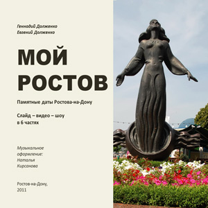
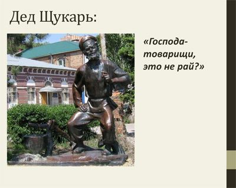
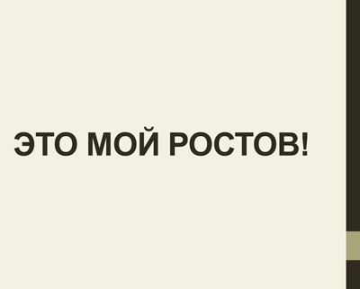

Мой Ростов: Слайд-видео-шоу в 6 частях / Памятные датыРостов-на-Дону, 2011.

Аннотация
«ПОДАРОК» ВСЕМ ЛЮБЯЩИМ РОСТОВ-НА-ДОНУ ОТ КАФЕДРЫ ОБЩЕЙ ГЕОГРАФИИ, КРАЕВЕДЕНИЯ И ТУРИЗМА ЮФУ И «ДОНСКОГО ИЗДАТЕЛЬСКОГО ДОМА»
1. Памятные даты Ростова-на-Дону: от киммерийцев до Чернышева (буклет)
2. Слайд-видео-шоу в 6 частях (субъективный взгляд авторов)


Творческий коллектив:
Геннадий Долженко, туризмовед, экскурсовед, ЮФУ – руководитель, сценарий, режиссура
Евгений Долженко, программист ЮГИНФО ЮФУ – программирование
Наталья Кирсанова, географ, ЮФУ – музыкальное оформление
Геннадий Долженко, туризмовед, экскурсовед, ЮФУ – руководитель, сценарий, режиссура
Евгений Долженко, программист ЮГИНФО ЮФУ – программирование
Наталья Кирсанова, географ, ЮФУ – музыкальное оформление
Ростов-на-Дону: «ДиД», 2011
Приобрести «ПОДАРОК» можно в магазине «Донской мир»
ул. Соколова, 22.
Тел.: 240-79-21, 263-83-90
Тел.: 240-79-21, 263-83-90